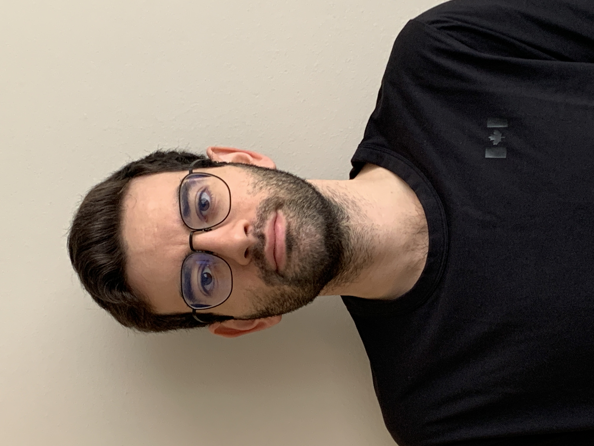

Roy Ataya
Systems Engineer
A quick summary about myself: I have 2 bachelors degrees, the first in Molecular Biology and Biochemistry and the second in Systems Engineering, both from Simon Fraser University in British Columbia, Canada. I am passionate about software development because it allows me to use my creative skills to design innovative and novel solutions to problems. I am a backend developer that dabbles in iOS/macOS development and primarily code in C++, Python and Swift.
I am learning: C#, HTML, JavaScript, CSS, Rust and Google Cloud Platform.
 linkedin/roy-ataya
linkedin/roy-ataya
 github/RoyAtaya
github/RoyAtaya
Skills
-
Programming:
- C/C++, Python, MATLAB, Swift, Apex, T-SQL, SQL, C#
-
Tools:
-
Frameworks:
- SwiftUI, UIKit, MediaPipe/BlazePose, Apex test framework, Core Data
-
IDEs:
- Xcode, Visual Studio Code, Visual Studio, CLion, PyCharm, IntelliJ IDEA
-
Operatingn Systems:
- Windows, macOS, Linux (Ubuntu), Linux (WSL)
-
Other:
- Object-oriented programming, Agile/Scrum
Professional Experience
-
Developer Intern, Salesforce - Traction on Demand
Jan 2021 – Aug 2021 | Burnaby, BC, Canada
- Designed and implemented a brand new login and self registration
component for an Experience Cloud webpage using Apex; that enhanced
customer satisfaction and site usability.
- Created comprehensive unit tests using the Apex testing framework to
ensure high product quality and minimize bugs; resulting in 92% tested
code coverage.
- Collaborated with technical consultants and product owners to improve
message board comment system using Apex, that resulted in enhanced
customer experience.
- Refactored 2 code bases to create multiple reusable packages, that led to
increased internal efficiency.
- Developed code to consume REST APIs.
-
Research Engineering Assistant, Simon Fraser University
May 2019 – Aug 2019 | Burnaby, BC, Canada
- Designed a custom PCB using EasyEDA based on an Arduino UNO
microcontroller and Arduino Ethernet Shield, in a team of 2.
- Implemented C++ & Python software packages allowing website control
of the Arduino UNO via the internet in 2 weeks.
- Developed encryption/decryption scripts to enhance data security, for the
website and the custom PCB, by 100%.
Projects
-
Personal website
Mar 2023 – present
- Developing a personal website using HTML, JS, and CSS.
-
macOS Recipe App
Dec 2022 – present
- Developing a macOS application with Swift to enable creative culinary
experiences, allowing users to store and randomly select recipes.
- Designing an intuitive user experience by creating Graphical User
Interface (GUI) through SwiftUI.
- Implementing persistent storage using Core Data.
-
Body Stress Inference
Aug 2022
- Created a motion capture tool to recognize hazardous poses, applying
Python, Unity and ergonomic standards in a 3-person team.
- Established real-time user data capture using Mediapipe/BlazePose
framework.
- Developed an analytical tool utilizing the REBA process to measure stress
levels and recommend necessary changes, with a 95% accuracy.
- Rendered user’s motions on a Unity rig model, with colour-coded joints
indicating various risk levels.
-
Pressure sensing system that collects data to measure spinal pressure
in scoliosis patients
Jan 2022 - Aug 2022
- Worked in a team of 6 to win the ICAMES 2022 engineering competition
Best Project In General Award.
- Lead the electrical team to design a custom PCB for our firmware to run
on and to control the pressure sensing system, using EasyEDA.
-
Deepfake Detector
Sep 2020 - Dec 2020
- Trained a deep learning model, in Python, to detect deepfakes of human faces using co-occurrence matrices, in a team of 3.
- Achieved a 90% accuracy on fake images, 94.6% accuracy with real
images and total accuracy of 92.3%.
- Harnessed numpy, Keras, Tensorflow and OpenCV libraries to develop
the model.
- Wrote a script to evaluate the trained model on a set of test images.
- Collaborated with colleagues effectively using scrum principles.
Education
-
Bachelor of Applied Science - Systems Engineering,
- Simon Fraser University Sep 2017 – Aug 2022
- Burnaby, BC, Canada
-
Certificate of Genomics,
- Simon Fraser University Sep 2015 – Apr 2017
- Burnaby, BC, Canada
-
Bachelor of Science Molecular Biology and Biochemistry
- Simon Fraser University Sep 2011 – Apr 2017
- Burnaby, BC, Canada